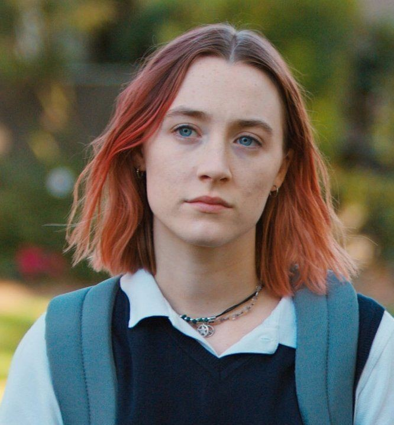

Christine "Lady bird" Mcpherson
Decidida, introspectiva y enérgica. Su buen corazón choca constantemente con las trampas del último año escolar, llevándola a veces a perder de vista a quienes realmente la valoran.

Marion Mcpherson
Trabaja turnos dobles en el hospital, lo que forjó su carácter pragmático e implacable. Ama a su hija con fuerza, pero su pánico al fracaso hace que se exprese casi siempre a través de críticas.

Julie Steffans
Auténtica y cálida, es el refugio incondicional de la protagonista. Lejos de las poses del colegio, demuestra una nobleza enorme al mantenerse firme cuando las cosas realmente importan.

Danny O'Neill
Dulce, educado y apasionado por el teatro. Aunque proyecta la imagen del 'chico ideal' de una familia tradicional, esconde a un adolescente vulnerable, aterrorizado de revelar su verdadera identidad.

Kyle Scheible
El clásico adolescente rebelde con aura de misterio. Su distancia lo vuelve atractivo, pero termina demostrando que, lejos del pensador profundo que aparenta, es un chico despistado y egocéntrico.

Jenna Walton
Representa todo lo que Lady Bird anhela: estatus, popularidad y comodidades. Es el motor de la crisis de identidad de la protagonista, quien llega a mentir sobre su esencia para encajar en su círculo.